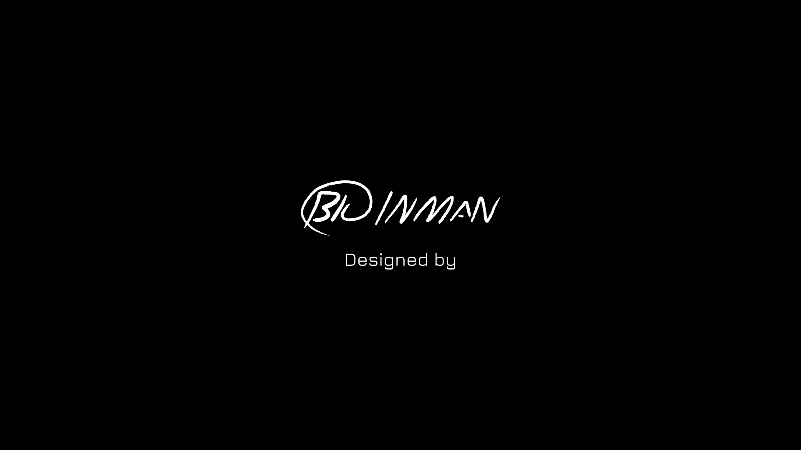

Loading the original artwork…
This animation requires JavaScript. The original artwork and website remain available.
Open existing intro
Motion study · existing artwork
Play
Replay
0.0 / 16
Continue